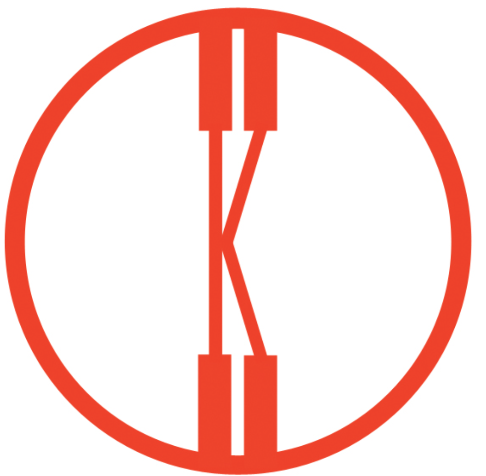

Daimingzhang@cca.com
510-640-4773
Oakland, CA
Typography is a tool of communication.
It must be communication in its most intense
form. The emphasis must be on absolute
clarity since this distinguishes the character
of our own writing from that of ancient
pictographic forms. Our intellectual
relationship to the world is individual-exact
(e.g.,this individual-exact relationship is
in a state of transition toward a collective
-exact orientation).